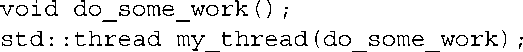
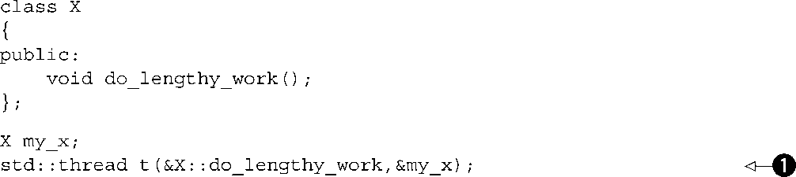

第2章 管理线程
本章主要内容
- 启动线程，以及各种让代码在新线程上运行的方法
- 等待线程完成并让它自动运行
- 唯一地标识线程
那么，你已经下决心为你的应用程序使用并发了。特别地，你决定了使用多线程。接下来呢？如何启动这些线程，怎样检查它们已完成，怎样监视它们呢？C++标准库让大多数线程管理任务变得相对简单，通过与给定线程相关联的std::thread
对象就可以管理所有事情，如你将要看到的那样。对于那些并不直观的任务，标准库也提供了从基本构建块进行按需构建的可扩展性。
在本章中，我将从基础开始阐述。启动一个线程，等待它完成，或是在后台运行它。接下来我们将看一看在线程函数启动时向其传递额外的参数，以及如何将线程的所有权从一个std::thread
对象转移到另一个。最后，我们会看一看选择所使用的线程数量，以及标识特定的线程。
2.1 基本线程管理
每个C++程序都拥有至少一个线程，它是由C++在运行时启动的，该线程运行着main()
函数。你的程序可以继续启动具有其他函数作为入口的线程。然后，这些线程连同初始线程一起，并发运行。正如程序会在main()
函数返回时退出那样，当指定的入口函数返回时，该线程就会退出。如你所见，如果你有线程对应的std::thread
对象，你就可以等待它完成。但首先你得启动它，所以让我们来看一看启动线程。
2.1.1 启动线程
如同你在第1章中所看到的，线程是通过构造std::thread
对象来开始的，该对象指定了线程上要运行的任务。在最简单的情况下，该任务仅仅是一个普普通通的返回void
且不接受参数的函数。这个函数在自己的线程上运行，直到返回，然后线程停止。但从另一个极端看，该任务可能是一个接受额外参数的函数对象，当它运行时，会执行一系列由某种消息机制所指定的相互独立的操作，并且只有当线程再次通过某种消息机制接收到信号时才会停止。无论线程将要做什么或是从哪里启动，使用C++线程库来开始一个线程总归是要构造一个std::thread
对象。

就是这么简单。当然，你必须确保引入了<thread>
头文件，从而编译器可以找到std::thread
类的定义。与许多C++标准库相似，std::thread
可以与任何可调用（callable）
类型一同工作，所以你可以将一个带有函数调用操作符的类的实例传递给std::thread
的构造函数来进行代替。
在这种情况下，所提供的函数对象被复制（copied） 到属于新创建的执行线程的存储器中，并从那里调用。因此重要的是，副本与原版有着等效的行为，否则结果可能会与预期不符。
当给线程构造函数传递一个函数对象时要考虑的一件事是避免所谓的“C++的最棘手的解析”。如果你传递一个临时的且未命名的变量，那么其语法可能与函数声明一样，在这种情况下，编译器会将其解释成如下这样，而非对象定义。例如，
声明了函数my
_thread
，它接受单个参数（参数类型是指向不接受参数同时返回background
_task
对象的函数的指针），并返回std::thread
对象，而不是启动一个新线程。你可以像前面说的那样通过命名函数对象来避免这种情况，通过使用一组额外的括号，或使用新的统一初始化语法，例如，
在第一个例子❶中，额外的括号避免其解释为函数声明，从而让my
_thread
被声明为std::thread
类型的变量。第二个例子❷使用新的统一初始化语法，用大括号而不是括号，同样也是声明一个变量。
有一种避免了此问题的可调用对象类型，就是 lambda 表达式（lambda expression ） 。这是C++11中的一项新功能，其基本功能是允许你编写一个局部函数，并可能捕捉一些局部变量，同时避免传递额外参数的需求（参见2.2节）。有关lambda表达式的详情，请参阅附录A中A.5节。前面的例子可以用lambda表达式编写如下。
一旦开始了线程，你需要显式地决定是要等待它完成（通过结合它——参见2.1.2节），还是让它自行运行（通过分离它——参见2.1.3节）。如果你在std::thread
对象被销毁前未作决定，那么你的程序会被终止（std::thread
的析构函数调用std::terminate()
）。因此，即便在异常存在的情况下，确保线程正确地结合或是分离都是你的当务之急。请参见2.1.3节中处理这一场景的技巧。需要注意的是，你只需要在std::thread
对象被销毁之前做出这个决定即可——线程本身可能在你结合或分离它之前早就已经结束了，而且如果你分离它，那么该线程可能在std::thread
对象被销毁后很久都还在运行。
如果你不等待线程完成，那么你需要确保通过该线程访问的数据是有效的，直到该线程完成为止。这并不是新问题——即使是在单线程代码中，在对象被销毁后还访问它也是未定义的行为——但线程的使用提供了遇到这种生命周期问题的额外机会。
你可能遇到这样问题的一种情况是，当线程函数持有局部变量的指针或引用，且当函数退出的时候线程尚未完成时，清单2.1展示的就是这样一个场景的例子。
清单2.1 当线程仍然访问局部变量时返回的函数

在这种情况下，当oops
退出❸时与my
_thread
相关联的新线程可能仍然在运行，因为通过调用detach()
❷你已经显式地决定不等待它。如果线程仍在运行，则在下次调用do
_something(i)
❶时就会访问一个已被销毁的变量。这就像普通的单线程代码那样——允许对局部变量的指针或引用持续到函数退出之后绝不是一个好主意——但对于多线程代码更容易犯这样的错误，因为当它发生的时候，并不一定是显而易见的。
一个常见的处理这种情况的方式是使线程函数自包含，并且把数据复制（copy）到该线程中而不是共享数据。如果你为线程函数使用了一个可调用对象，该对象本身被复制到该线程中，那么原始对象就可以立即被销毁。但是你仍然需要警惕包含有指针或引用的对象，就像上面的清单2.1那样。特别地，在一个访问局部变量的函数中创建线程是个糟糕的主意，除非能保证线程在函数退出前完成。
另外，通过结合（joining） 线程，你可以确保在函数退出前，该线程执行完毕。
2.1.2 等待线程完成
如果你需要等待线程完成，你可以通过在相关联的std::thread
实例上调用join()
来实现。在清单2.1的情况下，把函数体右括号前对my
_thread.detach()
的调用替换为调用my
_thread.join()
，就将足以确保在函数退出之前，即局部变量被销毁之前，该线程就已结束。在这种情况下，就意味着在独立的线程上运行函数是没什么意义的，因为第一个线程在此期间将做不了任何有用的事情，但在实际的代码当中，初始线程可能要么有自己的工作去做，要么是在等待所有线程完成之前就要启动多个线程来做有用的工作。
join()
很简单也很暴力——你要么等待一个线程完成要么就不等。如果你需要对等待线程进行更细粒度的控制，比如检查线程是否完成，或只是在一段特定的时间内进行等待，那么就必须使用替代机制，例如条件变量和future，我们将在第4章中提到。调用join()
的行为也会清理所有与该线程相关联的存储器，这样std::thread
对象不再与现已完成的线程相关联，它也不与任何线程相关联。这就意味着，你只能对一个给定的线程调用一次join()
，一旦你调用了join()
，此std::thread
对象不再是可连接的，并且joinable()
将返回false
。
2.1.3 在异常环境下的等待
如前所述，你要确保在std::thread
对象被销毁前已调用join()
或detach()
函数。如果要分离线程，通常在线程启动后就可以立即调用detach()
，所以这不是个问题。但是如果打算等待该线程，就需要仔细地选择在代码的哪个位置调用join()
。这意味着，如果在线程开始之后但又是在调用join()
之前引发了异常，对join()
的调用就容易被跳过。
为了避免应用程序在引发异常的时候被终止，你需要在这种情况决定要做什么。一般来说，如果你打算在非异常的情况下调用join()
，你还需要在存在异常时调用join()
，以避免意外的生命周期问题。清单2.2展示了这样的简单代码。
清单2.2 等待线程结束
清单2.2中的代码使用了try
/catch
块，以确保访问局部状态的线程在函数退出前结束，无论函数是正常退出❷还是异常❶中断。使用try
/catch
块很啰嗦，而且容易将作用域弄乱，所以并不是一个理想的方案。如果确保线程必须在函数退出前完成是很重要的——无论是因为它具有对其他局部变量的引用还是任何其他原因——那么确保这是所有可能的退出路径的情况是很重要的，无论正常还是异常，并且希望提供一个这样做的简单明了的机制。
这样做的方法之一是使用标准的资源获取即初始化（RAII）
惯用语法，并提供一个类，在它的析构函数中进行join()
，正如清单2.3的代码。看看它是如何简化函数f()
的。
清单2.3 使用RAII等待线程完成
在当前线程的执行到达f
末尾❹时，局部对象会按照构造函数的逆序被销毁。因此，thread
_guard
对象g
首先被销毁，并且析构函数❷中线程被结合。即便是当函数因do
_something
_in
_current
_thread
引发异常而退出的情况下也会发生。
在清单2.3中的析构函数在调用join()
❷前首先测试thread
_guard
的析构函数是不是joinable()
❶的。这很重要，因为对于一个给定的执行线程join()
只能被调用一次，所以如果线程已经被结合，这样做就是错误的。
拷贝构造函数和拷贝赋值运算符被标记=delete
❸，以确保他们不会由编译器自动提供。复制或赋值这样一个对象可能是危险的，因为它可能比它要结合的线程的作用域存在得更久。通过将它们声明为已删除的，任何复制thread
_guard
对象的企图都将产生编译错误。参见附录A中A.2节，了解更多关于已删除的函数。
如果无需等待线程完成，可以通过分离（detaching）
它来避免这种异常安全问题。这打破了线程与std::thread
对象的联系并确保当std::thread
对象被销毁时std::terminate()
不会被调用，即使线程仍在后台运行。
2.1.4 在后台运行线程
在std::thread
对象上调用detach()
会把线程丢在后台运行，也没有直接的方法与之通信。也不再可能等待该线程完成；如果一个线程成为分离的，获取一个引用它的std::thread
对象也是不可能的，所以它也不再能够被结合。分离的线程确实是在后台运行；所有权和控制权被转交给C++运行时库，以确保与线程相关联的资源在线程退出后能够被正确地回收。
参照UNIX的守护进程（daemon process ）概念，被分离的线程通常被称为守护线程（daemon threads ），它们无需任何显式的用户界面，而运行在后台。这样的线程通常是长时间运行的，它们可能在应用程序的几乎整个生命周期中都在运行，执行后台任务，例如监控文件系统、清除对象缓存中的未使用项或是优化数据结构。在另一个极端，有另一种鉴别线程何时完成的机制，或者线程被用作“即用即忘”任务，在这里使用分离线程也是有意义的。
如你在2.1.2节中已经看到的，你通过调用std::thread
对象的detach()
的成员函数来分离线程。在调用完成后，std::thread
对象不再与执行的实际线程相关联，同时也不能够被加入。
为了从一个std::thread
对象中分离线程，必须有一个线程供分离。你不能在一个没有与执行线程相关联的std::thread
对象上调用detach()
。这对于join()
也是同样的要求，你可以用完全相同的方法进行检查——你只能在t.joinable()
返回true
的时候，为一个std::thread
对象t
调用t.detach()
。
考虑一个类似于字处理器的应用程序，它可以一次编辑多个文档。有许多种方法在UI级别和内部来处理这个问题。有一种现在看起来越来越普遍的方式，是具有多个相互独立的顶层窗口，与正在编辑的文档一一对应。尽管这些窗口看起来完全独立，各自拥有自己的菜单等，但它们是在同一个应用程序的实例上运行的。一种在内部处理这个问题的方式是在其自己的线程中运行各自的文档编辑窗口；每个线程都运行相同的代码，但拥有与被编辑文档相关的不同的数据以及相应的窗口属性。打开一个新的文档就需要启动一个新的线程。处理请求的线程并不在乎等待其他的线程完成，因为它在一个不相关的文件上工作，所以运行分离的线程就成为了首选。
清单2.4展示了这种方法的简单的代码大纲。
清单2.4 分离线程以处理其他文档
如果用户选择打开一个新的文档，它会提示其有文档要打开，启动新线程来打开该文档❶，然后分离它❷。因为新的线程与当前线程做着同样的操作，只是文件不同，你可以用新选定的文件名作为参数，重用同一个函数（edit
_document
）。
这个例子还展示了一个案例，它有助于传递参数给用来启动线程的函数：并非仅仅将函数名传递给std::thread
构造函数❶，你还可以传递文件名参数。虽然也有其他机制能够做到这一点，例如使用具有成员数据的函数对象取代普通的带有参数的函数，但线程库提供了一个简单方法来实现之。
2.2 传递参数给线程函数
如清单2.4中所示，传递参数给可调用对象或函数，基本上就是简单地将额外的参数传递给std::thread
构造函数。但重要的是，参数会以默认的方式被复制（copied）
到内部存储空间，在那里新创建的执行线程可以访问它们，即便函数中的相应参数期待着引用。这里有一个简单的例子。
这里创建一个新的与t
相关联的执行线程，称为f(3, "hello")
。注意即使f
接受std::string
作为第二个参数，字符串字面值仅在新线程的上下文中才会作为char const*
传送，并转换为std::string
。尤其重要的是当提供的参数是一个自动变量的指针时，如下所示。
在这种情况下，正是局部变量buffer
❶的指针被传递给新线程❷，还有一个重要的时机，即函数oops
会在缓冲在新线程上被转换为std::string
之前退出，从而导致未定义的行为。解决之道是在将缓冲传递给std::thread
的构造函数之前转换为std::string
。
在这种情况下，问题就出在你依赖从缓冲的指针到函数所期望的std::string
对象的隐式转换，因为std::thread
构造函数原样复制了所提供的值，并未转换为期望的参数类型。
也有可能得到相反的情况，对象被复制，而你想要的是引用。这可能发生在当线程正在更新一个通过引用传递来的数据结构时，例如，
尽管update
_data
_for
_widget
❶希望通过引用传递第二个参数，std::thread
的构造函数❷却并不知道；它无视函数所期望的类型，并且盲目地复制了所提供的值。当它调用update
_data
_for
_widget
时，它最后将传递data
在内部的副本的引用而非对data
自身的引用。于是，当线程完成时，随着所提供参数的内部副本的销毁，这些改动都将被舍弃，将会传递一个未改变的data
❸，而非正确更新的版本给process
_widget
_data
。对于熟悉std::bind
的人来说，解决方案也是显而易见的，你需要用std::ref
来包装确实需要被引用的参数。在这种情况下，如果你将对线程的调用改为
那么update
_data
_for
_widget
将被正确地传入data
的引用，而非data
副本（copy）
的引用。
如果你熟悉std::bind
，那么参数传递语义就不足为奇，因为std::thread
构造函数和std::bind
的操作都是依据相同的机制定义的。这意味着，例如，你可以传递一个成员函数的指针作为函数，前提是提供一个合适的对象指针作为第一个参数。

这段代码将在新线程上调用my
_x.do
_lengthy
_work()
，因为my
_x
的地址是作为对象指针❶提供的。你也可以提供参数给这样的成员函数调用：std::thread
构造函数的第三个参数将作为成员函数的第一个参数等等。
提供参数的另一个有趣的场景是，这里的参数不能被复制但只能被移动（moved
）：一个对象内保存的数据被转移到另一个对象，使原来的对象变成“空壳”。这种类型的一个例子是std::unique
_ptr
，它提供了动态分配对象的自动内存管理。只有一个std::unique
_ptr
实例可以在某一时刻指向一个给定的对象，当该实例被销毁时，其指向的对象将被删除。移动构造函数（move constructor
）和移动赋值运算符（move assignment operator
）允许一个对象的所有权在std::unique
_ptr
实例之间进行转移（参见附录A中A.1.1节，关于移动语义的详情）。这种转移给源对象留下一个NULL
指针。这种值的移动使得该类型的对象作为函数的参数被接受或从函数返回值。在源对象是临时的场合，这种移动是自动的，但在源是一个命名值的地方，此转移必须直接通过调用std::move()
来请求。下面的示例展示了运用std::move
将动态对象的所有权转移到一个线程中。
通过在std::thread
构造函数中指定std::move(p)
，big
_object
的所有权先被转移进新创建的线程的内部存储中，然后进入process
_big
_object
。
标准线程库中的一些类表现出与std::unique
_ptr
相同的所有权语义，std::thread
就是其中之一。虽然std::thread
实例并不拥有与std::unique
_ptr
同样方式的动态对象，但他们却拥有资源，每一个实例负责管理一个执行线程。这种所有权可以在实例之间进行转移，因为std::thread
的实例是可移动的（movable）
，即使他们不是可复制的（copyable）
。这确保了在允许程序员选择在对象之间转换所有权的时候，在任意时刻只有一个对象与某个特定的执行线程相 关联。
2.3 转移线程的所有权
假设你想要编写一个函数，它创建一个在后台运行的线程，但是向调用函数回传新线程的所有权，而非等待其完成，又或者你想要反过来做，创建一个线程，并将所有权传递给要等待它完成的函数。在任意一种情况下，你都需要将所有权从一个地方转移到另一个地方。
这里就是std::thread
支持移动的由来。正如在上一节所描述的，在C++标准库里许多拥有资源的类型，如std::ifstream
和std ::unique
_ptr
是可移动的（movable）
，而非可复制的（copyable）
，并且std::thread
就是其中之一。这意味着一个特定执行线程的所有权可以在std::thread
实例之间移动，如同接下来的例子。该示例展示了创建两个执行线程，以及在三个std::thread
实例t1、t2
和t3
之间对那些线程的所有权进行转移。
首先，启动一个新线程❶并与t1
相关联。然后当t2
构建完成时所有权被转移给t2
，通过调用std::move()
来显式地转移所有权❷。此刻，t1
不再拥有相关联的执行线程，运行some
_function
的线程现在与t2
相关联。
然后，启动一个新的线程并与一个临时的std::thread
对象相关联❸。接下来将所有权转移到t1
中，是不需要调用std::move()
来显式移动所有权的，因为此处所有者是一个临时对象——从临时对象中进行移动是自动和隐式的。
t3
是默认构造的❹，这意味着它的创建没有任何相关联的执行线程。当前与t2
相关联的线程的所有权转移到t3
❺，再次通过显式调用std::move()
，因为t2
是一个命名对象。在所有这些移动之后，t1
与运行some
_other
_function
的线程相关联，t2
没有相关联的线程，t3
与运行some
_function
的线程相关联。
最后一次移动❻将运行some
_function
的线程的所有权转回给t1
。但是在这种情况下t1
已经有了一个相关联的线程（运行着some
_other
_function
），所以会调用std::terminate()
来终止程序。这样做是为了与std::thread
的析构函数保持一致。你在第2.1.1节曾看到，你必须在析构前显式地等待线程完成或是分离，这同样适用于赋值：你不能仅仅通过向管理一个线程的std::thread
对象赋值一个新的值来“舍弃”一个线程。
std::thread
支持移动意味着所有权可以很容易地从一个函数中被转移出，如清单2.5所示。
清单2.5 从函数中返回std::thread
同样地，如果要把所有权转移到函数中，它只能以值的形式接受std::thread
的实例作为其中一个参数，如下所示。
std::thread
支持移动的好处之一，就是你可以建立在清单2.3中thread
_guard
类的基础上，同时使它实际上获得线程的所有权。这可以避免thread
_guard
对象在引用它的线程结束后继续存在所造成的不良影响，同时也意味着一旦所有权转移到了该对象，那么其他对象都不可以结合或分离该线程。因为这主要是为了确保在退出一个作用域之前线程都已完成，我把这个类称为scoped
_thread
。其实现如清单2.6所示，同时附带一个简单的示例。
清单2.6 scoped_thread和示例用法

这个例子与清单2.3类似，但是新线程被直接传递到scoped
_thread
❹，而不是为它创建一个单独的命名变量。当初始线程到达f
❺的结尾时，scoped
_thread
对象被销毁，然后结合❸提供给构造函数❶的线程。使用清单2.3中的thread
_guard
类，析构函数必须检查线程是不是仍然可结合，你可以在构造函数中❷来做，如果不是则引发异常。
std::thread
对移动的支持同样考虑了std::thread
对象的容器，如果那些容器是移动感知的（如更新后的std::vector<>
）。这意味着你可以编写像清单2.7中的代码，生成一批线程，然后等待它们完成。
清单2.7 生成一批线程并等待它们完成
如果线程是被用来细分某种算法的工作，这往往正是所需的。在返回调用者之前，所有线程必须全都完成。当然，清单2.7的简单结构意味着由线程所做的工作是自包含的，同时它们操作的结果纯粹是共享数据的副作用。如果f()
向调用者返回一个依赖于这些线程的操作结果的值，那么正如所写的这样，该返回值就得通过检查线程终止后的共享数据来决定。在线程间转移操作结果的替代方案将在第4章中讨论。
将std::thread
对象放到std::vector
中是线程迈向自动管理的一步。与其为那些线程创建独立的变量并直接与之结合，不如将它们视为群组。你可以进一步创建在运行时确定的动态数量的线程，更进一步地利用这一步，而不是如清单2.7中的那样创建固定的数量。
2.4 在运行时选择线程数量
C++标准库中对此有所帮助的特性是std::thread::hardware
_currency()
。这个函数返回一个对于给定程序执行时能够真正并发运行的线程数量的指示。例如，在多核系统上它可能是CPU核心的数量。它仅仅是一个提示，如果该信息不可用则函数可能会返回0，但它对于在线程间分割任务是一个有用的指南。
清单2.8展示了std::accumulate
的一个简单的并行版本实现。它在线程之间划分所做的工作，使得每个线程具有最小数目的元素以避免过多线程的开销。请注意，该实现假定所有的操作都不引发异常，即便异常可能会发生。例如，std::thread
构造函数如果不能启动一个新的执行线程那么它将引发异常。在这样的算法中处理异常超出了这个简单示例的范围，将放在第8章中阐述。
清单2.8 std::accumulate的简单的并行版本
虽然这是一个相当长的函数，但它实际上是很直观的。如果输入范围为空➊，只返回初始值init
。否则，此范围内至少有一个元素，于是你将要处理的元素数量除以最小的块大小，以获取线程的最大数量➋。这是为了避免当范围中只有五个值时，在一个32核的机器上创建32个线程。
要运行的线程数是你计算出的最大值和硬件线程数量➌的较小值。你不会想要运行比硬件所能支持的更多的线程（超额订阅，oversubscription
），因为上下文切换将意味着更多的线程会降低性能。如果对std::thread::hardware
_concurrency()
的调用返回0，你只需简单地替换上你所选择的数量，在这个例子中我选择了2。你不会想要运行过多的线程，因为在单核的机器上这会使事情变慢，但同样地你也不希望运行的过少，因为那样的话，你就会错过可用的并发。
每个待处理的线程的条目数量是范围的长度除以线程的数量➍。如果你担心数量不能整除，没必要——稍后再来处理。
既然你知道有多少个线程，你可以为中间结果创建一个std::vector<T>
，同时为线程创建一个std::vector<std::thread>
➎。请注意，你需要启动比num
_threads
少一个的线程，因为已经有一个了。
启动线程是个简单的循环：递进block
_end
迭代器到当前块的结尾➏，并启动一个新的线程来累计此块的结果➐。下一个块的开始是这一个的结束➑。
当你启动了所有的线程后，这个线程就可以处理最后的块➒。这就是你处理所有未被整除的地方。你知道最后一块的结尾只能是last
，无论在那个块里有多少元素。一旦累计出最后一个块的结果，你可以等待所有使用std::for
_each
生成的线程➓，如清单2.7中所示，接着通过最后调用std::accumulate
将结果累加起来⓫。
在你离开这个例子前，值得指出的是在类型T
的加法运算符不满足结合律的地方（如float
和double
），这个parallel
_accumulate
的结果可能会跟std::accumulate
的有所出入，这是将范围分组成块导致的。此外，对迭代器的需求要更严格一些，它们必须至少是前向迭代器（forward iterators
），然而std::accumulate
可以和单通输入迭代器（input iterators
）一起工作，同时T
必须是可默认构造的（default constructible
）以使得你能够创建results
向量。这些需求的各种变化是并行算法很常见的；就其本质而言，它们以某种方式的不同是为了使其并行，并且在结果和需求上产生影响。并行算法会在第8章中进行更深入的阐述。另外值得一提的是，因为你不能直接从一个线程中返回值，所以你必须将相关项的引用传入results
向量中。从线程中返回结果的替代方法，会在第4章中通过使用
future
来实现。
在这种情况下，每个线程所需的所有信息在线程开始时传入，包括存储其计算结果的位置。实际情况并非总是如此。有时，作为进程的一部分有必要能够以某种方式标识线程。你可以传入一个标识数，如同在清单2.7中i
的值，但是如果需要此标识符的函数在调用栈中深达数个层次，并且可能从任意线程中被调用，那样做就很不方便。当我们设计C++线程库时就预见到了这方面的需求，所以每个线程都有一个唯一的标识符。
2.5 标识线程
线程标识符是std::thread::id
类型的，并且有两种获取方式。其一，线程的标识符可以通过从与之相关联的std::thread
对象中通过调用get
_id()
成员函数来获得。如果std::thread
对象没有相关联的执行线程，对get
_id()
的调用返回一个默认构造的std::thread::id
对象，表示“没有线程”。另外，当前线程的标识符，可以通过调用std::this
_thread::get
_id()
获得，这也是定义在<thread>
头文件中的。
std::thread::id
类型的对象可以自由地复制和比较；否则，它们作为标识符就没什么大用处。如果两个std::thread::id
类型的对象相等，则它们代表着同一个线程，或两者都具有“没有线程”的值。如果两个对象不相等，则它们代表着不同的线程，或其中一个代表着线程，而另一个具有“没有线程”的值。
线程库不限制你检查线程的标识符是否相同，std::thread::id
类型的对象提供了一套完整的比较运算符，提供了所有不同值的总排序。这就允许它们在关系型容器中被用作主键，或是被排序，或者任何作为程序员的你认为合适的方式进行比较。比较运算符为std::thread::id
所有不相等的值提供了一个总的排序，所以它们表现为你直觉上期望的那样：如果a<b
且b<c
，那么a<c
，等等。标准库还提供了std::hash<std::thread::id>
，使得std::thread::id
类型的值可在新的无序关系型容器中作为主键来用。
std::thread::id
的实例常被用来检查一个线程是否需要执行某些操作。例如，如果线程像在清单2.8中那样的被用来分配工作，启动了其他线程的初始线程在需要做的工作可能会在算法中略有不同。在这种情况下，它可以在启动其他线程之前存储std::this
_thread::get
_id()
的结果，然后算法的核心部分（这对所有线程都是公共的）可以对照所存储的值来检查自己的线程ID。
另外，当前线程的std::thread::id
可以作为操作的一部分而存储在数据结构中。以后在相同数据结构上的操作可以对照执行此操作的线程ID来检查所存储的ID，来确定哪些操作是允许的/需要的。
类似地，线程ID可以指定的数据需要与一个线程进行关联，并且诸如线程局部存储这样的替代机制不适用的地方，用作关系型容器的主键。例如这样的一个容器，它可以被控制线程用来存储关于在它控制下的每个线程的信息，或是在线程之间传递信息。
这种想法就是，在大多数情况下，std::thread::id
足以作为线程的通用标识符。只有当标识符具有与其相关联的语义（比如作为数组的索引）时，才有必要用替代方案。你甚至可以将一个std::thread::id
实例写到诸如std::cout
这样的输出流中。
你得到的确切的输出，严格取决于实现；标准给定的唯一保证是，比较结果相等的线程ID应该产生相同的输出，而那些比较结果不相等的应该给出不同的输出。因此，这主要是对调试和日志有用，但数值是没有语义的，所以也没有更多可说的了。
2.6 小结
在这一章中，我介绍了线程管理与C++标准库的基本知识：启动线程，等待其完成，以及因为你希望它们在后台运行而不等待其完成。你还看到了如何在线程开始时将参数传递给线程函数，如何将管理线程的责任从代码的一个部分转移到另一个部分，以及如何用线程组来做分配工作。最后，我讨论了标识线程，以便关联数据或是不方便通过替代方法进行关联的特定线程的行为。尽管你可以使用运行在独立数据上的完全独立的线程做很多事情，例如在清单2.8中那样，但有些时候，当线程运行时在它们之间共享数据是更理想的。第3章围绕直接在线程间共享数据进行讨论，而第4章围绕有或没有共享数据的同步操作涵盖更一般性的问题。
Table of contents
- 版权信息
- 版权声明
- 内容提要
- 序
- 译者简介
- 致谢
- 前言
- 资源
- 简要目录
- 第1章 你好，C++并发世界
- 第2章 管理线程
- 第3章 在线程间共享数据
- 第4章 同步并发操作
- 第5章 C++内存模型和原子类型上操作
- 第6章 设计基于锁的并发数据结构
- 第7章 设计无锁的并发数据结构
- 第8章 设计并发代码
- 第9章 高级线程管理
- 第10章 多线程应用的测试与调试
- 附录A C++11部分语言特性简明参考
- 附录B 并发类库简要对比
- 附录C 消息传递框架与完整的ATM示例
-
附录D C++线程类库参考
- D.1 <chrono>头文件
- D.2 <condition_variable>头文件
-
D.3 <atomic>头文件
- D.3.1 std::atomic_xxx typedef
- D.3.2 ATOMIC_xxx_LOCK_FREE宏
- D.3.3 ATOMIC_VAR_INIT宏
- D.3.4 std::memory_order枚举
- D.3.5 std::atomic_thread_fence函数
- D.3.6 std::atomic_signal_fence函数
- D.3.7 std::atomic_flag类
- D.3.8 std::atomic类模板
- D.3.9 std::atomic模板的特化
- D.3.10 std::atomic<integral-type>特化
- D.3.11 std::atomic<T*>偏特化
- D.4 <future>头文件
- D.5 <mutex>头文件
-
D.6 <ratio>头文件
- D.6.1 std::ratio类模板
- D.6.2 std::ratio_add模板别名
- D.6.3 std::ratio_subtract模板别名
- D.6.4 std::ratio_multiply模板别名
- D.6.5 std::ratio_divide模板别名
- D.6.6 std::ratio_equal类模板
- D.6.7 std::ratio_not_equal类模板
- D.6.8 std::ratio_less类模板
- D.6.9 std::ratio_greater类模板
- D.6.10 std::ratio_less_equal类模板
- D.6.11 std::ratio_greater_equal类模板
- D.7 <thread>头文件
- 欢迎来到异步社区！
- 看完了